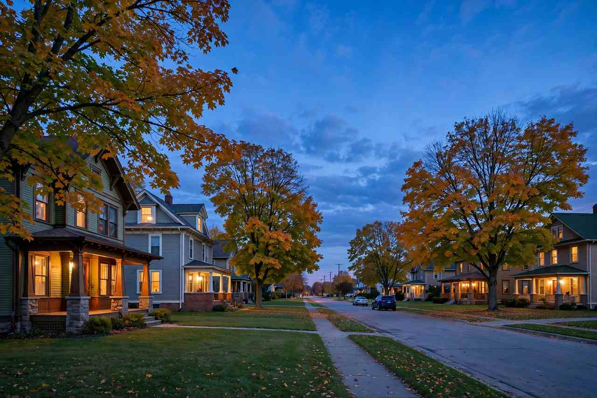

Rodent Control · Reinbeck, IA
Same-Day Rodent Control in Reinbeck, IA
Rats in the attic or mice in the kitchen in Reinbeck? Murvo provides same-day rodent control with local crews who inspect first, remove the animals already inside, and seal the entry points they used. Every job is quoted flat-rate in writing before work begins and backed by a written guarantee, covering homes and businesses across Grundy County. From Morrison, Lincoln, Grundy Center to every corner of Grundy County, 1 ZIP codes are covered by local Murvo crews.
24/7Availability
1ZIP codes covered
Same-dayResponse
Licensed · Upfront options · Written guarantees · Fully insured
Reinbeck at a glance
Local Rodent Control for Reinbeck, IA.
Grundy County
Countycentral Iowa
RegionWaterloo · 17 mi
Nearest metro72 miles northeast of Des Moines
From Des Moines1
ZIP codes covered Service by service in Reinbeck
Rodent Control Services Available in Reinbeck
Thirty rodent services, one local standard in Reinbeck: inspection-led, exclusion-first, and quoted in writing before work begins. Browse the full list for Grundy County below - each section explains what the service involves here, what it typically costs nationally, and how fast we can start.
- 01Rodent Control↗
- 02Rodent Inspection↗
- 03Rodent Removal↗
- 04Rodent Exclusion↗
- 05Rodent Proofing↗
- 06Rat Control↗
- 07Mice Control↗
- 08Mouse Removal↗
- 09Rat Removal↗
- 10Rodent Trapping↗
- 11Rodent Baiting↗
- 12Rodenticide Application↗
- 13Attic Rodent Removal↗
- 14Crawl Space Rodent Removal↗
- 15Wall Rodent Removal↗
- 16Kitchen Rodent Control↗
- 17Garage Rodent Control↗
- 18Commercial Rodent Control↗
- 19Residential Rodent Control↗
- 20Emergency Rodent Removal↗
- 21Same-Day Rodent Control↗
- 22Rodent Damage Repair↗
- 23Rodent Waste Cleanup↗
- 24Rodent Disinfection↗
- 25Rodent Odor Removal↗
- 26Dead Rodent Removal↗
- 27Rodent Dropping Cleanup↗
- 28Rodent Exclusion for Roofs↗
- 29Rodent Exclusion for Vents↗
- 30Rodent Exclusion for Chimneys↗
Rodent Control in Reinbeck
Rodent Control in Reinbeck
What does a finished job actually look like? No new droppings, no nighttime movement, and no open route back inside. That is the standard Murvo works toward in Reinbeck, with background-checked technicians, a written workmanship guarantee, and follow-up checks that confirm the quiet is real rather than temporary luck.
When you need rodent control in Reinbeck, the job starts with what is actually happening in your part of Grundy County. Murvo crews work Reinbeck every week, so they know how Norway rat (Rattus norvegicus) and House mouse (Mus musculus) behave around vintage duplexes and stone homes, brick bungalows, older single-family homes, and farm and rural properties here - and where they get in: basement foundations, alley-facing garage doors, sewer laterals, and gaps around utility lines and sills. We arrive equipped for the full job, confirm the flat rate in writing before work begins, and cover the whole Reinbeck area, including Morrison, Lincoln. No call-center runaround and no open-ended hourly billing - just a local crew, a clear plan, and a written quote you approve first. Coverage for rodent control spans 1 ZIP codes in Grundy County, including 50669.
Our process follows five stages: Inspect, Remove, Exclude, Clean, and Monitor. Active animals are cleared with targeted trapping matched to the species, then openings around pipes, vents, and rooflines are sealed with copper mesh, hardware cloth, and metal flashing. Contaminated areas are cleaned safely, and monitoring visits confirm activity has stopped before we sign the job off. A technician first checks the attic, crawl space, garage, and kitchen, recording droppings, nests, gnaw marks, and entry gaps with photos. You approve every stage in advance, in writing.
Booking takes one call, and same-day appointments are available in most Reinbeck areas. Your technician inspects first, talks you through the plan in plain language, and only starts once you approve the written quote. Work is carried out in stages, with trap checks and sealing visits booked ahead. At the final visit we walk the finished work together and confirm monitoring is clear. Questions are answered at every stage, day or night.
Need help quickly in Reinbeck? Call any time — the emergency line is staffed 24/7, and same-day rodent control appointments are available in most areas. We inspect first, explain the plan in plain language, and put the flat rate in writing before work starts. That is also why Murvo pairs removal with exclusion in Reinbeck - treating the animal without closing basement foundations, alley-facing garage doors, sewer laterals, and gaps around utility lines and sills rarely lasts.
The honest answer is that it depends on species, activity level, and how much sealing your home needs, which is why Murvo inspects first and then gives you a flat-rate quote in writing. For national context only, Angi's 2026 data averages rat and mouse removal and control at $396, typically $189 to $655; that is not a Murvo price, and your written quote is the figure you pay.
Rodent Inspection in Reinbeck
Rodent Inspection in Reinbeck
Most Reinbeck inspections start with uncertainty: a noise, a smell, a few droppings that might be old. Murvo turns that uncertainty into a written record. A rodent inspection checks attic, crawl space, roofline, and foundation, photographs the evidence, and ends with a flat-rate written quote for anything worth fixing.
In Reinbeck, rodent inspection is not a generic spray-and-go service. Rodents exploit basement foundations, alley-facing garage doors, sewer laterals, and gaps around utility lines and sills in vintage duplexes and stone homes, brick bungalows, older single-family homes, and farm and rural properties, and a fix that ignores those routes does not last. Murvo's Reinbeck team inspects first, shows you the evidence - droppings, gnaw marks, entry gaps - and then lays out the work with a flat-rate written quote. We serve all of Grundy County from Reinbeck, including Morrison, Lincoln, and every job is covered by our written workmanship guarantee. Coverage for rodent inspection spans 1 ZIP codes in Grundy County, including 50669.
We listen first: when you hear noises, and where, often points straight to the most active nesting areas. The visit ends with a written report covering species, entry points, contamination, and the removal and exclusion steps we recommend, each with a flat-rate price. Technicians then trace active runways, identify whether droppings belong to Norway rat (Rattus norvegicus) or House mouse (Mus musculus), and check insulation and wiring for damage. That detail stops you paying for treatment aimed at the wrong species or the wrong part of the building.
To book, call any time; urgent inspections are answered 24/7. We agree a window, note where you have noticed signs, and confirm access to the attic and crawl space. On the day, your technician works through the property methodically, reviews photographs with you on site, and leaves written findings plus any quote before departing. You keep the report either way, and it remains useful for staging repairs later or comparing conditions at a future seasonal check.
Inspections are the fastest way we help in Reinbeck: same-day appointments are available in most areas, and urgent calls are answered 24/7. A typical rodent inspection takes under an hour for most homes, and you leave the visit with photos, written findings, and a flat-rate quote for any work we recommend, so decisions never wait on us. Murvo's Reinbeck crews explain the finding either way, and the flat-rate quote leaves the decision with you.
Nationally, a professional rodent inspection typically runs $100 to $200 according to Angi's 2026 data, and it is often credited toward the job if you proceed. Murvo confirms your exact rodent inspection price before the visit and quotes any follow-up work as a flat rate in writing after inspection, so the figure you approve is the figure you pay, with no hourly billing.
Rodent Removal in Reinbeck
Rodent Removal in Reinbeck
Removal works best when it is species-specific. In Reinbeck, vintage duplexes and stone homes, brick bungalows, older single-family homes, and farm and rural properties give Norway rat (Rattus norvegicus) and House mouse (Mus musculus) warm voids, stored food, and quiet nesting corners reached through basement foundations, alley-facing garage doors, sewer laterals, and gaps around utility lines and sills. Our licensed, insured technicians assess numbers and access routes first, then set traps on proven runways and return on schedule until catches fall to zero and monitoring stays clear.
When you need rodent removal in Reinbeck, the job starts with what is actually happening in your part of Grundy County. Murvo crews work Reinbeck every week, so they know how Norway rat (Rattus norvegicus) and House mouse (Mus musculus) behave around vintage duplexes and stone homes, brick bungalows, older single-family homes, and farm and rural properties here - and where they get in: basement foundations, alley-facing garage doors, sewer laterals, and gaps around utility lines and sills. We arrive equipped for the full job, confirm the flat rate in writing before work begins, and cover the whole Reinbeck area, including Morrison, Lincoln. No call-center runaround and no open-ended hourly billing - just a local crew, a clear plan, and a written quote you approve first. Seasonal timing matters for rodent removal in Reinbeck: rodents surge in Reinbeck from October through April.
Removal here is measured in records, not impressions. Sealing recommendations follow immediately, because a clear home with open gaps will not stay clear for long in Reinbeck. Each trap is numbered, mapped, and checked on schedule, and every catch is logged against its location. That log shows where activity concentrates, where it is fading, and where a placement needs to move. When the log stays empty across repeat checks, removal is genuinely finished. That record also protects you, because it shows exactly when activity ended rather than when visits simply stopped.
Once removal is underway, expect short, predictable visits. Your technician checks each mapped trap, removes catches hygienically, resets what is still needed, and updates the record with you. When catches reach zero, monitoring confirms it, sealing is discussed, and the job closes with a walkthrough and your guarantee paperwork in hand before we leave. At close, prevention advice is tailored to what actually attracted rodents to your property, not copied from a generic checklist.
When rodents are active indoors in Reinbeck, waiting rarely helps. Rodent removal can usually start the same day you call, our line answers 24/7 for a rodent loose in a living area, and the first visit sets traps straight away. Scheduled returns then clear and reset them until monitoring shows the home is clear. If you are seeing signs now, an inspection this week is the fastest way to know which situation you are in.
How many animals are active, which species they are, and how much sealing follows removal all shape the price, so we assess first and then quote one flat rate in writing. Angi's 2026 national context — an average of $396 and a typical $189 to $655 range for rat and mouse removal — is provided for comparison only; your written quote is the exact Murvo figure.
Rodent Exclusion in Reinbeck
Rodent Exclusion in Reinbeck
Trapping alone only buys time if rodents can walk straight back in. Rodent exclusion in Reinbeck is the permanent fix: a full entry-point survey, then sealing with materials rodents cannot gnaw through. Murvo clears active animals first so none are sealed inside, gives one flat-rate written quote before work starts, and guarantees the workmanship on every seal installed.
Homeowners in Reinbeck call Murvo for rodent exclusion because the problem here is specific: Norway rat (Rattus norvegicus) pressure around vintage duplexes and stone homes, brick bungalows, older single-family homes, and farm and rural properties, tight access at basement foundations, alley-facing garage doors, sewer laterals, and gaps around utility lines and sills, and activity that follows the local season. Our Grundy County crews diagnose the real source before recommending work, explain the options in plain language, and quote one flat rate in writing. Across Reinbeck - including Morrison, Lincoln - every visit is backed by licensed, insured technicians and our written workmanship guarantee. The Reinbeck crews who handle rodent exclusion also handle the follow-through - proofing, cleanup, and monitoring - so one visit can close the whole problem.
Start with a hard rule: nothing gets sealed while animals remain inside. Door sweeps close the obvious routes, and smaller cracks receive durable sealant chosen for exterior exposure. Technicians confirm the home is clear through trapping and monitoring, then survey the structure junction by junction, because seams between materials open as buildings settle. Each opening receives its own treatment, from packed copper mesh in irregular gaps to hardware cloth across vents and flashing at roof junctions. A written inventory ties each photograph to a location, so future checks can revisit precisely the same points.
Before sealing day, confirm pets are secured and access to the roofline and foundation is clear. The crew then works through the agreed list, checks that no animals remain inside, and fits each seal cleanly. Afterwards you receive the photographs, the guarantee, and a date for the follow-up check that confirms everything is holding as intended. If monitoring ever finds fresh activity at a sealed point, that written inventory tells us exactly what to inspect first.
The first step is a survey, and in Reinbeck we can often schedule that survey the same day you call about rodent exclusion. Sealing follows once active animals are cleared — nothing is ever sealed inside — and most homes are fully sealed within days, with entry points near wiring or food areas handled first. If you are seeing signs now, an inspection this week is the fastest way to know which situation you are in.
For national context, Angi's 2026 data puts basic exclusion at $200 to $600, depending on access and the number of openings. That is a benchmark, not a Murvo price. After surveying your Reinbeck home, we list every opening that needs sealing and quote one flat rate in writing, so you pay for the work your property actually needs and nothing more.
Rodent Proofing in Reinbeck
Rodent Proofing in Reinbeck
When is the right season for rodent proofing in Reinbeck? Before cold weather sends rodents searching for indoor warmth, though any quiet month works well. Our licensed, insured technicians harden the structure, advise on food storage and vegetation, and leave a seasonal re-check booked, all backed by a written workmanship guarantee.
Homeowners in Reinbeck call Murvo for rodent proofing because the problem here is specific: Norway rat (Rattus norvegicus) pressure around vintage duplexes and stone homes, brick bungalows, older single-family homes, and farm and rural properties, tight access at basement foundations, alley-facing garage doors, sewer laterals, and gaps around utility lines and sills, and activity that follows the local season. Our Grundy County crews diagnose the real source before recommending work, explain the options in plain language, and quote one flat rate in writing. Across Reinbeck - including Morrison, Lincoln - every visit is backed by licensed, insured technicians and our written workmanship guarantee. The Reinbeck crews who handle rodent proofing also handle the follow-through - proofing, cleanup, and monitoring - so one visit can close the whole problem.
Where proofing overlaps with structural exclusion, we use the same chew-resistant materials: copper mesh, hardware cloth, metal flashing, and durable sealants matched to each opening. Around kitchens, we coordinate sealing behind units and along pipe runs; in garages, we tackle stored-food and clutter harborage directly. The written plan distinguishes homeowner tasks from professional work, and seasonal re-checks after completion catch new gaps early, before they can turn into another indoor infestation for your household. That keeps protection current year after year.
Book a rodent proofing survey in Reinbeck and we will arrange a visit time that suits your household, often the same day. You receive a flat-rate written quote separating essential from optional work. Approved sealing is completed cleanly, then a seasonal re-check is scheduled. Your technician walks the property with you, photographs weak points, and explains the plan in plain language. The finished work is fully guaranteed in writing by Murvo.
Rodent proofing is preventive, so there is rarely a rush, but surveys in Reinbeck can often be arranged the same day you call, and always within a few days. Most proofing work is completed in a single visit once you approve the plan, and booking before colder weather gives your home protection ahead of the seasonal rush indoors. In Grundy County, activity follows the local season, so timing the work matters as much as the method.
For national context, Angi's 2026 data puts exclusion, the core of proofing, at $200 to $600 for basic work. That figure is a benchmark, not a Murvo price. After surveying your Reinbeck property, we separate quick homeowner wins from specialist sealing and quote the professional work as one flat rate in writing, so you can stage spending sensibly.
Rat Control in Reinbeck
Rat Control in Reinbeck
What separates control from a temporary lull? Monitoring that continues after the last catch. Murvo keeps checking until routes stay quiet, removes trapped rats hygienically, and finishes with exclusion so replacements cannot follow the same path. Licensed, insured technicians document every visit, and urgent calls are answered 24/7.
In Reinbeck, rat control is not a generic spray-and-go service. Rodents exploit basement foundations, alley-facing garage doors, sewer laterals, and gaps around utility lines and sills in vintage duplexes and stone homes, brick bungalows, older single-family homes, and farm and rural properties, and a fix that ignores those routes does not last. Murvo's Reinbeck team inspects first, shows you the evidence - droppings, gnaw marks, entry gaps - and then lays out the work with a flat-rate written quote. We serve all of Grundy County from Reinbeck, including Morrison, Lincoln, and every job is covered by our written workmanship guarantee. Coverage for rat control spans 1 ZIP codes in Grundy County, including 50669.
Safety shapes every placement decision. Where bait is genuinely necessary outdoors, it goes only inside locked, tamper-resistant stations, secured and labeled, never loose, and always alongside trapping and sealing rather than instead of them. Droppings are handled carefully: surfaces are disinfected before cleaning, never dry-swept, because disturbing dry material can spread contamination through the air. Traps are positioned away from pet routes and play areas and explained to the household in advance. Households receive that safety briefing in plain terms before the first station or trap is ever left behind.
Between visits, keep pet food secured and avoid moving any traps, even slightly, since position matters. Your background-checked technician returns on schedule, removes trapped rats promptly, adjusts placements, and reports counts plainly. The program closes only when monitoring confirms activity has ended and exclusion is finished, with your guarantee confirmed in writing at sign-off. Keep gates and access points available on scheduled days where possible, since uninterrupted checks keep the program on its planned timetable.
Call day or night — urgent rat control calls in Reinbeck are answered 24/7, and a same-day inspection can usually start the program. Pre-baiting begins on that first visit once you approve the written quote, traps are set when rats are feeding confidently, and scheduled checks continue until activity stops. The written quote for your Reinbeck property will spell out exactly which of these applies before any work starts.
Species, colony size, and the number of entry points to seal all affect rat work, which is why Murvo inspects first and quotes one flat rate in writing. Angi's 2026 figures, given for national context only, average rat control and removal at $396 and typically run $189 to $655; the written quote for your Reinbeck home is the exact price.
Mice Control in Reinbeck
Mice Control in Reinbeck
Most Reinbeck mouse problems announce themselves in the kitchen first: droppings in a drawer, a chewed corner on stored food, movement behind the kickboard. Murvo surveys those hotspots, clusters traps where mice actually travel, seals gaps, and covers the program with one flat-rate written quote approved in advance.
Homeowners in Reinbeck call Murvo for mice control because the problem here is specific: Norway rat (Rattus norvegicus) pressure around vintage duplexes and stone homes, brick bungalows, older single-family homes, and farm and rural properties, tight access at basement foundations, alley-facing garage doors, sewer laterals, and gaps around utility lines and sills, and activity that follows the local season. Our Grundy County crews diagnose the real source before recommending work, explain the options in plain language, and quote one flat rate in writing. Across Reinbeck - including Morrison, Lincoln - every visit is backed by licensed, insured technicians and our written workmanship guarantee. In Reinbeck, mice control calls most often involve vintage duplexes and stone homes, brick bungalows, older single-family homes, and farm and rural properties, where basement foundations, alley-facing garage doors, sewer laterals, and gaps around utility lines and sills decide whether the fix holds.
The program starts with an activity and entry-point survey covering kitchens, attics, wall voids, and under-floor spaces. Traps are placed in clusters along baseboards, behind appliances, and in attic voids, because mice travel the same short routes nightly. Technicians return to clear and reset traps and track numbers until they reach zero. We then seal pencil-width gaps, including the overlooked routes behind baseboards and where pipes and wires pass through floors, and advise on cleaning scent-marked surfaces. Follow-up monitoring confirms the result before sign-off.
Book with one call and tell us which rooms show signs; same-day surveys are often possible. Your technician inspects kitchen, attic, and voids, explains the route map, and quotes in writing before traps are set. Check visits are scheduled immediately, and each one reports catches plainly until the final confirmation visit shows activity has stopped. The final confirmation matters, because mice can go quiet briefly while a nest remains, and monitoring distinguishes quiet from genuinely finished.
Mice multiply fast, so mice control in Reinbeck is built to start fast too: a survey can often be arranged the same day you call, with traps set on that first visit once the quote is approved. Because mice investigate new objects quickly, catches usually begin soon after, and check visits follow until a final confirmation shows activity has stopped. That is also why Murvo pairs removal with exclusion in Reinbeck - treating the animal without closing basement foundations, alley-facing garage doors, sewer laterals, and gaps around utility lines and sills rarely lasts.
The number of rooms affected and the amount of sealing required set the price, so Murvo surveys first and quotes one flat rate in writing. For national context only, Angi's 2026 data averages rat and mouse control and removal at $396, typically $189 to $655 — not a Murvo price; your written quote is exact.
Mouse Removal in Reinbeck
Mouse Removal in Reinbeck
Mice nest where it is warm and undisturbed: attics, wall voids, crawl spaces, and behind kitchen cabinets in vintage duplexes and stone homes, brick bungalows, older single-family homes, and farm and rural properties across Reinbeck. They feed close to those nests, following basement foundations, alley-facing garage doors, sewer laterals, and gaps around utility lines and sills and pipe runs between rooms. Our technicians check warm spots near water heaters and appliances where mice raise young, so no nesting site is missed during removal.
When you need mouse removal in Reinbeck, the job starts with what is actually happening in your part of Grundy County. Murvo crews work Reinbeck every week, so they know how Norway rat (Rattus norvegicus) and House mouse (Mus musculus) behave around vintage duplexes and stone homes, brick bungalows, older single-family homes, and farm and rural properties here - and where they get in: basement foundations, alley-facing garage doors, sewer laterals, and gaps around utility lines and sills. We arrive equipped for the full job, confirm the flat rate in writing before work begins, and cover the whole Reinbeck area, including Morrison, Lincoln. No call-center runaround and no open-ended hourly billing - just a local crew, a clear plan, and a written quote you approve first. The Reinbeck crews who handle mouse removal also handle the follow-through - proofing, cleanup, and monitoring - so one visit can close the whole problem.
Trap-based removal is the default here for practical reasons. Cleanup follows the same care: droppings and nesting are never dry-swept, surfaces are disinfected first, and waste is bagged and removed hygienically. Once activity ends, access points are sealed thoroughly, and advice on storage and scent-trail cleaning helps the kitchen stay clear. It is safer around children and pets, results are visible and countable, and no animal is left to die inside a hidden void. Monitoring after sealing confirms the finish, so the result rests on evidence rather than a hopeful guess.
As catches fall, the focus shifts in order: final clearing, disinfection of affected areas, then sealing of access points. Your technician reviews the catch record with you at sign-off, confirms which rooms are fully safe to use, and leaves prevention advice plus guarantee paperwork. Seasonal proofing can be arranged if your property has repeated fall problems. If signs reappear during monitoring, placements are restored under the same agreed program rather than starting a new conversation from scratch.
For mice active in kitchens or living areas of your Reinbeck home, mouse removal can often begin the same day you call. That first visit surveys nesting sites and sets traps as soon as you approve the quote, and because mice investigate traps quickly, catches usually start fast. Return visits continue until numbers reach zero. In Grundy County, most cases involve the Norway rat (Rattus norvegicus) and the House mouse (Mus musculus), so the inspection focuses on their routes first.
Mouse removal cost reflects the number of rooms involved and how much sealing is needed, which is why Murvo surveys first and quotes a flat rate in writing. For national context only, Angi's 2026 data averages rat and mouse removal at $396, typically $189 to $655. That benchmark is not a Murvo price; your written quote covers your exact program.
Rat Removal in Reinbeck
Rat Removal in Reinbeck
If rats are active in your Reinbeck home right now, Murvo offers a same-day response and a clear written plan, with lines open 24/7 for urgent cases. Removal is delivered as one coordinated job: trapping, hygienic disposal, prevention, and a final walkthrough with monitoring evidence, so you are never asked to simply take our word that activity ended.
In Reinbeck, rat removal is not a generic spray-and-go service. Rodents exploit basement foundations, alley-facing garage doors, sewer laterals, and gaps around utility lines and sills in vintage duplexes and stone homes, brick bungalows, older single-family homes, and farm and rural properties, and a fix that ignores those routes does not last. Murvo's Reinbeck team inspects first, shows you the evidence - droppings, gnaw marks, entry gaps - and then lays out the work with a flat-rate written quote. We serve all of Grundy County from Reinbeck, including Morrison, Lincoln, and every job is covered by our written workmanship guarantee. Around Morrison, Lincoln, Grundy Center, the pattern is similar: House mouse (Mus musculus) finds basement foundations, alley-facing garage doors, sewer laterals, and gaps around utility lines and sills first, and lasting rat removal has to close those routes.
We lead with trapping and exclusion in an integrated, pet-conscious approach, using locked bait stations only where genuinely justified and monitored on schedule. Monitoring devices and a final walkthrough then provide documented evidence that activity has ended, and ongoing proofing keeps drains, vents, and rooflines checked afterwards. After clearance, contaminated insulation areas can be sanitized, and droppings are never dry-swept: following CDC guidance, surfaces are disinfected first before waste is removed. That evidence is always shared with you in writing.
Book and we will agree a visit time, with same-day appointments for active infestations where available. Your technician assesses the colony, explains each stage, and confirms the written quote before pre-baiting begins. Repeat visits are scheduled in advance, progress is reported after each one, and sealing follows once catches stop and monitoring stays clear. Every visit is documented with counts and locations, so the final clearance rests on a complete record rather than a single quiet check.
In Reinbeck, rat removal can usually start the same day you call, with 24/7 answering for rats active in living areas. Pre-baiting begins on the first visit after you approve the written quote, and traps are set once rats feed confidently, typically within days. Repeat visits then run frequently until monitoring confirms the colony is gone. A Reinbeck inspection confirms it on site - dropping size, gnaw marks, and entry points tell the story quickly.
Rat removal pricing depends on colony size, access, and the sealing needed afterwards, so Murvo assesses your property first and quotes a flat rate in writing. For national context only, Angi's 2026 data averages rat removal at $396, typically $189 to $655. That is a benchmark, not a Murvo price, and your written quote covers the full program described.
Rodent Trapping in Reinbeck
Rodent Trapping in Reinbeck
Good trapping is species craft, not guesswork. In Reinbeck, wary Norway rat (Rattus norvegicus) need unset traps pre-baited for several days before they will feed confidently, while House mouse (Mus musculus) respond to clustered traps at activity hotspots. Our technicians match trap types and baits to the species and setting, from food lures in kitchens to robust devices for larger rats in basements.
In Reinbeck, rodent trapping is not a generic spray-and-go service. Rodents exploit basement foundations, alley-facing garage doors, sewer laterals, and gaps around utility lines and sills in vintage duplexes and stone homes, brick bungalows, older single-family homes, and farm and rural properties, and a fix that ignores those routes does not last. Murvo's Reinbeck team inspects first, shows you the evidence - droppings, gnaw marks, entry gaps - and then lays out the work with a flat-rate written quote. We serve all of Grundy County from Reinbeck, including Morrison, Lincoln, and every job is covered by our written workmanship guarantee. Seasonal timing matters for rodent trapping in Reinbeck: rodents surge in Reinbeck from October through April.
Adjustment is where experience shows. As numbers fall toward zero, attention shifts to exclusion recommendations and cleanup, converting a trapping program into lasting protection. If catches cluster at one end of a runway, placements concentrate there; if a route goes quiet while another warms up, devices move accordingly. Baits are refreshed and matched to what the species is already eating nearby. Households receive a simple map of device locations and safety guidance for children and pets. Households can follow that adjustment process through the shared catch log, which records every change of position.
Between checks, leave devices untouched and note any new noises or droppings by room; that information sharpens the next visit. Your background-checked technician adjusts placements as the pattern changes and removes catches promptly and hygienically. The program ends with a clear monitoring result, a written summary of what was caught where, and sealing advice. The summary also notes which routes stayed busiest, information that makes any later exclusion work faster and more precisely targeted.
In Reinbeck, rodent trapping can usually start the same day you call, with traps placed or pre-baiting begun on the first visit after you approve the quote. Mice often investigate within the first night; wary rats need a few days of pre-baiting before traps are set. Scheduled check visits then keep catches moving until numbers reach zero. The written quote for your Reinbeck property will spell out exactly which of these applies before any work starts.
Trapping is usually quoted as part of a complete removal program rather than by the trap, and the price depends on species, activity level, and how many check visits are needed. Murvo inspects first and quotes one flat rate in writing covering the program and its check visits, so there are no per-visit surprises and no hourly billing at any stage.
Rodent Baiting in Reinbeck
Rodent Baiting in Reinbeck
In vintage duplexes and stone homes, brick bungalows, older single-family homes, and farm and rural properties, bait has a narrow, specific job: reducing outdoor pressure while sealing removes the indoor route through basement foundations, alley-facing garage doors, sewer laterals, and gaps around utility lines and sills. Our technicians in Grundy County place secured stations along runways away from play areas, label and photograph each one, and check consumption on schedule until activity ends and stations come out.
Homeowners in Reinbeck call Murvo for rodent baiting because the problem here is specific: Norway rat (Rattus norvegicus) pressure around vintage duplexes and stone homes, brick bungalows, older single-family homes, and farm and rural properties, tight access at basement foundations, alley-facing garage doors, sewer laterals, and gaps around utility lines and sills, and activity that follows the local season. Our Grundy County crews diagnose the real source before recommending work, explain the options in plain language, and quote one flat rate in writing. Across Reinbeck - including Morrison, Lincoln - every visit is backed by licensed, insured technicians and our written workmanship guarantee. Homes near Morrison tend to show activity first in Reinbeck, which is why inspections start with basement foundations, alley-facing garage doors, sewer laterals, and gaps around utility lines and sills.
Where baiting is not appropriate indoors, we say so, and recommend trapping first followed by proofing of gaps around pipes, vents, and doors. Consumption records from each visit show whether activity is falling, holding, or moving, guiding whether stations stay, move, or come out entirely in favor of sealing and trapping alone. That exclusion-first approach reduces reliance on bait over time, which matters for households with children, pets, or visiting wildlife in Reinbeck. You receive those records after every monitoring visit.
Booking starts with a conversation about pets, children, and wildlife on your property, because that shapes placement before we arrive. The inspection visit maps activity, agrees each proposed station location with you, and confirms the written quote. Approved stations are installed locked and labeled that visit, with monitoring dates booked before we leave. Nothing about placement, product type, or monitoring frequency is left vague, and you can ask for the record at any point.
In Reinbeck, rodent baiting starts with an inspection visit we can often arrange the same day you call. Stations are only placed after activity is mapped and you approve the written quote and each location, so setup is deliberate rather than rushed. Monitoring visits then run on a fixed schedule until consumption stops and activity is confirmed clear. Murvo's Reinbeck crews explain the finding either way, and the flat-rate quote leaves the decision with you.
How many locked stations your property needs and how long monitoring runs determine the cost, so Murvo inspects and maps activity first, then quotes one flat rate in writing covering placement and scheduled checks. There are no per-visit surprises, and because the approach is exclusion-first, the aim is to reduce and eventually remove stations rather than maintain them forever.
Rodenticide Application in Reinbeck
Rodenticide Application in Reinbeck
Our approach in Reinbeck is exclusion-first: seal entry points, trap active animals, and shrink the need for chemical control quickly. Where rodenticide application is genuinely justified for Norway rat (Rattus norvegicus) or House mouse (Mus musculus), a licensed technician maps, labels, and anchors every station, records amounts at each visit, and retrieves dead rodents promptly where accessible to reduce odor and secondary risks.
Homeowners in Reinbeck call Murvo for rodenticide application because the problem here is specific: Norway rat (Rattus norvegicus) pressure around vintage duplexes and stone homes, brick bungalows, older single-family homes, and farm and rural properties, tight access at basement foundations, alley-facing garage doors, sewer laterals, and gaps around utility lines and sills, and activity that follows the local season. Our Grundy County crews diagnose the real source before recommending work, explain the options in plain language, and quote one flat rate in writing. Across Reinbeck - including Morrison, Lincoln - every visit is backed by licensed, insured technicians and our written workmanship guarantee. Seasonal timing matters for rodenticide application in Reinbeck: rodents surge in Reinbeck from October through April.
Application begins with a thorough inspection to confirm species and activity levels and to decide whether rodenticide is needed at all; often, professional trapping plus controlled outdoor baiting is enough, and if trapping alone can solve your problem safely, that is the route we recommend first. When treatment is justified, we follow Inspect, Remove, Exclude, Clean, and Monitor: stations are mapped, labeled, anchored, and checked on schedule, with amounts recorded at every visit. Products stay inside locked stations at all times.
After booking, we discuss children, pets, livestock, and wildlife at your property before the visit, so product decisions are informed from the start. On arrival, your background-checked technician inspects, talks you through the plan and label information, and only applies product once you approve the written quote. Scheduled checks follow, amounts are recorded and reported, and stations are removed when activity is confirmed clear. Safety information stays with you throughout the program.
In Reinbeck, rodenticide application begins with an inspection we can often schedule the same day you call, because no responsible application happens without one. If treatment is justified and you approve the written quote, locked stations are installed on that visit. Monitoring then runs on schedule, and treatment stops as soon as data shows activity has ended. That is also why Murvo pairs removal with exclusion in Reinbeck - treating the animal without closing basement foundations, alley-facing garage doors, sewer laterals, and gaps around utility lines and sills rarely lasts.
Application cost depends on the number of locked stations, the product required under Iowa rules, and how long monitoring runs. Murvo inspects first, explains whether trapping or exclusion could avoid chemical control entirely, and then quotes one flat rate in writing before work begins. The quote covers scheduled monitoring visits, so there are no per-visit surprises later.
Attic Rodent Removal in Reinbeck
Attic Rodent Removal in Reinbeck
Attics offer rodents warmth, quiet nesting material, and insulation to contaminate, and in vintage duplexes and stone homes, brick bungalows, older single-family homes, and farm and rural properties across Reinbeck they are reached through basement foundations, alley-facing garage doors, sewer laterals, and gaps around utility lines and sills long before anyone notices. Our technicians photograph what they find inside, check for young, nests, and secondary entry points in adjoining crawl spaces, and clear the space before arranging cleanup and disinfection where contamination is present.
Homeowners in Reinbeck call Murvo for attic rodent removal because the problem here is specific: Norway rat (Rattus norvegicus) pressure around vintage duplexes and stone homes, brick bungalows, older single-family homes, and farm and rural properties, tight access at basement foundations, alley-facing garage doors, sewer laterals, and gaps around utility lines and sills, and activity that follows the local season. Our Grundy County crews diagnose the real source before recommending work, explain the options in plain language, and quote one flat rate in writing. Across Reinbeck - including Morrison, Lincoln - every visit is backed by licensed, insured technicians and our written workmanship guarantee. In Reinbeck, attic rodent removal calls most often involve vintage duplexes and stone homes, brick bungalows, older single-family homes, and farm and rural properties, where basement foundations, alley-facing garage doors, sewer laterals, and gaps around utility lines and sills decide whether the fix holds.
Cleanup in a contaminated attic follows CDC guidance: droppings and nesting material are never dry-swept, because that can spread contamination into the air; surfaces are disinfected first, then waste is removed hygienically by technicians in protective equipment. Our IPM approach favors trapping and exclusion over poison in attics, preventing animals dying in inaccessible voids. We also assess insulation damage and can refer repairs, check adjoining crawl spaces for connected activity, and advise on clearing roof debris. Photographs document conditions before and after work.
Before the visit, clear access to the attic hatch and note when noises are loudest. The job closes with a monitoring check, a walkthrough of photographs, and guarantee paperwork in your hands. On arrival, your background-checked technician explains the plan, starts trapping once the quote is approved, and reports insulation and wiring findings plainly. After sealing, a quiet attic is verified rather than assumed, and the monitoring result is reported to you before the job closes.
Overhead scratching in Reinbeck often gets a same-day attic rodent removal visit, and attics with chewed wiring are prioritized because of the fire risk. Trapping starts on the first visit once you approve the written quote, checks run on schedule, and most attics are cleared and sealed within days. Monitoring stays in place briefly afterwards to confirm nothing remains inside. In Grundy County, most cases involve the Norway rat (Rattus norvegicus) and the House mouse (Mus musculus), so the inspection focuses on their routes first.
Activity levels, roofline sealing, and whether contaminated insulation needs cleanup all affect attic pricing, so Murvo inspects first and quotes one flat rate in writing for the removal program. Cleanup options are priced separately in writing before you decide, so nothing is added once work is underway.
Crawl Space Rodent Removal in Reinbeck
Crawl Space Rodent Removal in Reinbeck
Why avoid poison beneath a home? Pets can access crawl spaces, and carcasses hidden under a house are difficult to retrieve. Murvo favors trapping and physical exclusion instead, delivered by licensed, insured technicians who photograph every sealed opening, refit access panels securely, and confirm results with monitoring under a written guarantee.
Homeowners in Reinbeck call Murvo for crawl space rodent removal because the problem here is specific: Norway rat (Rattus norvegicus) pressure around vintage duplexes and stone homes, brick bungalows, older single-family homes, and farm and rural properties, tight access at basement foundations, alley-facing garage doors, sewer laterals, and gaps around utility lines and sills, and activity that follows the local season. Our Grundy County crews diagnose the real source before recommending work, explain the options in plain language, and quote one flat rate in writing. Across Reinbeck - including Morrison, Lincoln - every visit is backed by licensed, insured technicians and our written workmanship guarantee. The Reinbeck crews who handle crawl space rodent removal also handle the follow-through - proofing, cleanup, and monitoring - so one visit can close the whole problem.
Cleanup below a home follows CDC guidance: droppings and nesting debris are never dry-swept, because disturbing them can spread contamination; surfaces are disinfected first, then waste is bagged and removed by technicians in protective equipment. Photographs of finished sealing are supplied with your guarantee paperwork, and access panels are refitted securely after every visit. We also trace connections upward through wall voids, since treating the crawl space alone misses rodents traveling to the attic. Moisture problems found are reported with practical recommendations.
After booking, we confirm crawl-space access and any known leaks or standing water beneath the home. Follow-up visits are booked ahead for clearance and sealing. The job closes with a monitoring check and a walkthrough of the documented results together. On arrival, your background-checked technician inspects with protective equipment, sets traps at active areas, and talks you through the findings with photos. Every stage is approved by you before it proceeds.
For crawl space rodent removal in Reinbeck, inspections are usually arranged within a few days — and sooner when odors are drifting into living areas or activity sounds heavy. Trapping begins on the first visit after you approve the written quote, clearance and sealing follow in sequence, and monitoring stays in place until the space below is confirmed quiet. In Grundy County, most cases involve the Norway rat (Rattus norvegicus) and the House mouse (Mus musculus), so the inspection focuses on their routes first.
Access, the number of vents and gaps to seal, and whether waste cleanup is required all shape crawl-space pricing, so Murvo inspects first and quotes one flat rate in writing. Cleanup options are priced in writing before you decide whether to include them, and there are no surprise charges for extra vents within the agreed scope.
Wall Rodent Removal in Reinbeck
Wall Rodent Removal in Reinbeck
Most Reinbeck wall calls start at night, when scratching behind the drywall makes sleep impossible. Murvo locates the activity by listening, tracing entry routes, and using inspection cameras where access allows, then traps at void access points. A flat-rate written quote comes before any access work is considered.
In Reinbeck, wall rodent removal is not a generic spray-and-go service. Rodents exploit basement foundations, alley-facing garage doors, sewer laterals, and gaps around utility lines and sills in vintage duplexes and stone homes, brick bungalows, older single-family homes, and farm and rural properties, and a fix that ignores those routes does not last. Murvo's Reinbeck team inspects first, shows you the evidence - droppings, gnaw marks, entry gaps - and then lays out the work with a flat-rate written quote. We serve all of Grundy County from Reinbeck, including Morrison, Lincoln, and every job is covered by our written workmanship guarantee. Homes near Morrison tend to show activity first in Reinbeck, which is why inspections start with basement foundations, alley-facing garage doors, sewer laterals, and gaps around utility lines and sills.
Once the void is clear, we apply proofing to wall entry routes, sealing baseboard and pipe gaps linked to kitchen activity so the route cannot reopen. If a rodent has died in the wall, retrieval is followed by sanitation: contaminated material is never dry-swept, surfaces are disinfected first following CDC guidance, and odor treatment is applied so other rodents are not attracted back. Monitoring at key access points then confirms the void stays quiet. Connected voids are checked before we finish.
Between visits, note the times and rooms where sounds continue, since that pattern guides adjustments. Sign-off happens only when monitoring confirms silence, sealing and sanitation are complete, and your guarantee paperwork is confirmed in writing. Your background-checked technician clears traps, checks connected voids, and runs quiet checks at varied times of day. Silence is checked more than once before sign-off, because a single quiet evening can mislead when an animal simply moves elsewhere.
Persistent wall scratching in Reinbeck often qualifies for a same-day locating visit, especially when it is keeping you awake. On that first visit, once you approve the written quote, traps are set at void access points; because rodents travel the void nightly, results usually follow within days. Quiet-wall checks confirm the silence before we sign off. The written quote for your Reinbeck property will spell out exactly which of these applies before any work starts.
Wall work pricing depends on how precisely activity can be located and whether a minimal access cut is needed, which is why Murvo locates the activity first and quotes a flat rate in writing. That way wall access work never becomes an open-ended bill, and the quote covers the trapping, sealing, and monitoring described in your plan.
Kitchen Rodent Control in Reinbeck
Kitchen Rodent Control in Reinbeck
If you are hearing scratching under units at night in Reinbeck, the kitchen is rarely the whole story. Murvo traces routes from wall voids and basements, sets discreet traps away from food surfaces, and seals the real entry points. You get one flat-rate written quote before work starts.
In Reinbeck, kitchen rodent control is not a generic spray-and-go service. Rodents exploit basement foundations, alley-facing garage doors, sewer laterals, and gaps around utility lines and sills in vintage duplexes and stone homes, brick bungalows, older single-family homes, and farm and rural properties, and a fix that ignores those routes does not last. Murvo's Reinbeck team inspects first, shows you the evidence - droppings, gnaw marks, entry gaps - and then lays out the work with a flat-rate written quote. We serve all of Grundy County from Reinbeck, including Morrison, Lincoln, and every job is covered by our written workmanship guarantee. Homes near Morrison tend to show activity first in Reinbeck, which is why inspections start with basement foundations, alley-facing garage doors, sewer laterals, and gaps around utility lines and sills.
Work begins with a kitchen-focused inspection behind fridges, ovens and sinks, inside cabinets and along kickboards, reading droppings and grease marks to identify the species and its routes. We then trace activity into wall voids and adjoining rooms, seal gaps around waste pipes and cabinet holes with durable materials, disinfect contaminated areas, and monitor until activity stops completely. Discreet traps are placed away from food preparation surfaces, never loose poison where children, pets or food could reach it. Nothing is left to guesswork at any stage.
When you book, we agree an arrival window and any access needs around appliances. The guarantee on the work is provided in writing. On site, inspection comes first, then your written quote and plan. Approved work covers removal, sealing and disinfection, carried out by licensed and insured technicians. Afterwards we monitor, report what we find at each visit, and only close the job when activity has stopped. Your technician explains each visit before leaving the property.
Our phone lines are open 24/7, and kitchen cases involving droppings near food preparation areas are treated as a priority. In many Reinbeck cases we can arrange a same-day visit, subject to technician availability. Call, describe what you have found, and we will offer the earliest appointment we can. A Reinbeck inspection confirms it on site - dropping size, gnaw marks, and entry points tell the story quickly.
Cost depends on how many rodents are active, where they are entering, and how much sealing and cleanup the kitchen needs. Murvo inspects first, then gives one flat-rate written quote covering trapping, sealing and follow-up monitoring, with no hourly billing or add-on surprises. You approve the full price before any work begins, and the quote is backed by our written workmanship guarantee.
Garage Rodent Control in Reinbeck
Garage Rodent Control in Reinbeck
In Grundy County garages often connect straight into kitchens, utility rooms and wall voids. Our garage rodent control tackles the garage as the front door it really is: thorough inspection, humane removal where possible, durable sealing, and practical storage advice that keeps rodents from settling in again. Help is available around the clock, every day.
When you need garage rodent control in Reinbeck, the job starts with what is actually happening in your part of Grundy County. Murvo crews work Reinbeck every week, so they know how Norway rat (Rattus norvegicus) and House mouse (Mus musculus) behave around vintage duplexes and stone homes, brick bungalows, older single-family homes, and farm and rural properties here - and where they get in: basement foundations, alley-facing garage doors, sewer laterals, and gaps around utility lines and sills. We arrive equipped for the full job, confirm the flat rate in writing before work begins, and cover the whole Reinbeck area, including Morrison, Lincoln. No call-center runaround and no open-ended hourly billing - just a local crew, a clear plan, and a written quote you approve first. The Reinbeck crews who handle garage rodent control also handle the follow-through - proofing, cleanup, and monitoring - so one visit can close the whole problem.
Consider how a garage is actually used: bikes, bins, freezers and seasonal boxes all create hiding places. Then proofing closes wall gaps, vents and door edges, while damaged nesting material is cleared away. Our inspection moves zone by zone through that layout, noting food sources and the holes where cables or pipes cross into living areas. Removal follows the evidence we find. We also check connected rooms, since garage activity rarely stays contained, and schedule follow-up monitoring to confirm the whole route has shut down.
Share a few details when you book: what you found, where, and whether vehicles need moving. Trapping, nest clearing and sealing then proceed in order. At the visit, the technician walks the garage with you, confirms entry points, and provides the full price in writing before starting. Return visits check monitors and traps, and the job wraps up only when checks show no continuing activity around doors, walls or stored items inside the garage.
Our phones are answered 24/7, and garages with active nesting, damaged wiring or movement into the house are treated as urgent. Depending on technician schedules, a same-day appointment in Reinbeck is often possible. Describe the signs when you call and we will offer the earliest visit we can arrange. That is also why Murvo pairs removal with exclusion in Reinbeck - treating the animal without closing basement foundations, alley-facing garage doors, sewer laterals, and gaps around utility lines and sills rarely lasts.
As a national benchmark, Angi's 2026 data shows rat extermination ranging from $189-$655, with an average of $396; that is context only, not a Murvo price. Garage work varies with size, activity and the proofing doors and walls require. After inspecting, Murvo quotes one flat rate in writing for trapping, nest removal, sealing and monitoring, for your approval before anything starts.
Commercial Rodent Control in Reinbeck
Commercial Rodent Control in Reinbeck
Stock loss is only part of the cost. Rodents in a warehouse or dining room threaten ratings, contracts and customer trust just as quickly. In Reinbeck, we build a practical program around your trading hours: find the pressure points, remove activity discreetly, seal the routes, and keep records your next audit can actually use.
When you need commercial rodent control in Reinbeck, the job starts with what is actually happening in your part of Grundy County. Murvo crews work Reinbeck every week, so they know how Norway rat (Rattus norvegicus) and House mouse (Mus musculus) behave around vintage duplexes and stone homes, brick bungalows, older single-family homes, and farm and rural properties here - and where they get in: basement foundations, alley-facing garage doors, sewer laterals, and gaps around utility lines and sills. We arrive equipped for the full job, confirm the flat rate in writing before work begins, and cover the whole Reinbeck area, including Morrison, Lincoln. No call-center runaround and no open-ended hourly billing - just a local crew, a clear plan, and a written quote you approve first. Homes near Morrison tend to show activity first in Reinbeck, which is why inspections start with basement foundations, alley-facing garage doors, sewer laterals, and gaps around utility lines and sills.
Programs follow Inspect, Remove, Exclude, Clean and Monitor. Technicians map activity with monitoring points, trap discreetly away from customers, and proof dock doors, vents and pipe penetrations against re-entry. Staff receive simple training pointers so your team spots early droppings or gnawing before a small issue becomes an audit failure. Service is scheduled around trading hours, and urgent sightings during trading are handled with particular discretion to protect your reputation with waiting customers. Each stage is recorded on your written service report.
After you make contact, a surveyor visits at a time that suits trading, inspects the whole site and identifies risks. Monitoring continues on schedule, trends are reviewed with you, and the program adjusts as activity falls. You receive a written proposal with flat-rate pricing for initial work before anything starts. Approved work begins discreetly, with reports after every visit for your audit file. Emergency response is available 24/7 for urgent sightings.
Commercial calls are taken 24/7, and a live sighting during trading is handled as an emergency with discretion to protect customers and reputation. The visit we can offer in Reinbeck depends on technician availability, and we will always give you the earliest one possible. We can also advise on immediate steps to protect stock and your audit position while you wait. Around Reinbeck, vintage duplexes and stone homes, brick bungalows, older single-family homes, and farm and rural properties give rodents the most cover, which is why entry points get checked before traps are set.
For wider context, Angi's 2026 figures put rat extermination at $189-$655, averaging $396 nationally, though commercial sites are scoped individually and those figures are not Murvo prices. Site size, sector, activity and the exclusion and monitoring required all shape the cost. Murvo surveys first, then quotes a flat rate in writing for initial work or a clear scheduled-service price for an ongoing program, with reports included for your audit file.
Residential Rodent Control in Reinbeck
Residential Rodent Control in Reinbeck
A mouse seen in daylight often means more are hidden. In Reinbeck homes, we look beyond the sighting to the route behind it: gaps at basement foundations, alley-facing garage doors, sewer laterals, and gaps around utility lines and sills, clutter in the garage, food in low cabinets. Murvo removes the animals, closes those routes, cleans affected areas and checks back until signs have stopped completely.
When you need residential rodent control in Reinbeck, the job starts with what is actually happening in your part of Grundy County. Murvo crews work Reinbeck every week, so they know how Norway rat (Rattus norvegicus) and House mouse (Mus musculus) behave around vintage duplexes and stone homes, brick bungalows, older single-family homes, and farm and rural properties here - and where they get in: basement foundations, alley-facing garage doors, sewer laterals, and gaps around utility lines and sills. We arrive equipped for the full job, confirm the flat rate in writing before work begins, and cover the whole Reinbeck area, including Morrison, Lincoln. No call-center runaround and no open-ended hourly billing - just a local crew, a clear plan, and a written quote you approve first. Around Morrison, Lincoln, Grundy Center, the pattern is similar: House mouse (Mus musculus) finds basement foundations, alley-facing garage doors, sewer laterals, and gaps around utility lines and sills first, and lasting residential rodent control has to close those routes.
Every home visit follows Inspect, Remove, Exclude, Clean and Monitor. Exclusion seals the gaps found, cleanup disinfects contaminated areas, and monitoring visits confirm activity has ended rather than simply moved elsewhere in the house. Inspection covers attics, crawl spaces, garages, kitchens and the exterior, reading droppings, gnaw marks and rub marks to identify species and entry points such as basement foundations, alley-facing garage doors, sewer laterals, and gaps around utility lines and sills. Removal uses targeted trapping placed safely away from children and pets. Materials are chosen for durability, not the cheapest quick fix.
After booking, a licensed, background-checked technician arrives at the agreed time and inspects the whole property. Once approved, removal, sealing and cleanup go ahead in the right order. We return for monitoring visits, report what we find each time, and close the job only when activity has stopped. The work is backed by our written workmanship guarantee. You receive one flat-rate written quote covering the plan before work starts. We leave the area tidy when the work finishes.
We are available 24/7 by phone, and homes with rodents in living areas, kitchens or children's bedrooms are prioritized. Same-day visits in Reinbeck are often possible, subject to technician availability. Tell us what you have seen or heard, and we will offer the earliest appointment available and advise what to do meanwhile. In Grundy County, activity follows the local season, so timing the work matters as much as the method.
Cost depends on the species, how established the infestation is, and how much exclusion and cleanup your home needs. Murvo inspects first, then quotes one flat rate in writing covering removal, sealing, cleaning and monitoring, with no hourly charges or add-on surprises. You approve the price before work begins, and everything is backed by our written workmanship guarantee.
Emergency Rodent Removal in Reinbeck
Emergency Rodent Removal in Reinbeck
Sudden sightings in vintage duplexes and stone homes, brick bungalows, older single-family homes, and farm and rural properties deserve a proper response, not just a trap dropped by the door. Our emergency rodent removal in Reinbeck combines urgent removal with a focused inspection of voids, attics and entry points like basement foundations, alley-facing garage doors, sewer laterals, and gaps around utility lines and sills. Help is available around the clock, and we will offer the earliest visit we can arrange.
When you need emergency rodent removal in Reinbeck, the job starts with what is actually happening in your part of Grundy County. Murvo crews work Reinbeck every week, so they know how Norway rat (Rattus norvegicus) and House mouse (Mus musculus) behave around vintage duplexes and stone homes, brick bungalows, older single-family homes, and farm and rural properties here - and where they get in: basement foundations, alley-facing garage doors, sewer laterals, and gaps around utility lines and sills. We arrive equipped for the full job, confirm the flat rate in writing before work begins, and cover the whole Reinbeck area, including Morrison, Lincoln. No call-center runaround and no open-ended hourly billing - just a local crew, a clear plan, and a written quote you approve first. Coverage for emergency rodent removal spans 1 ZIP codes in Grundy County, including 50669.
We triage every emergency call by risk: animals in living space, food contamination, electrical damage and vulnerable occupants come first. Temporary securing is completed the same visit where full exclusion needs follow-up. Contaminated areas are disinfected following safe practice, and a clear plan is agreed for any remaining trapping, sealing or cleanup work. On site, the technician isolates the affected area, removes the rodents, and inspects connected voids and entry points such as basement foundations, alley-facing garage doors, sewer laterals, and gaps around utility lines and sills. Each stage is recorded on your written service report.
Call any time, day or night, and describe what is happening. Follow-up visits confirm the home is clear, under our written workmanship guarantee. We agree the earliest visit available and any steps to keep people and pets safe meanwhile. On arrival the technician inspects, quotes one flat rate in writing, and starts once you approve. Removal and securing come first, then disinfection and monitoring. You stay informed at every stage of the work.
For emergencies, our line is open 24/7, every day, and calls from Reinbeck are triaged by risk — live rodents in living areas, food contamination and chewed wiring come first. We will offer the earliest visit our technicians can reach. Until then, we will talk you through simple steps to keep people and pets safe. Around Reinbeck, vintage duplexes and stone homes, brick bungalows, older single-family homes, and farm and rural properties give rodents the most cover, which is why entry points get checked before traps are set.
For national context, Angi's 2026 data puts rat extermination at $189-$655, averaging $396, though emergency work is not priced from those figures and they are not Murvo prices. Location, numbers involved and the securing, cleanup or follow-up needed set the scope. On arrival Murvo inspects and quotes one flat rate in writing, with no hourly billing even on urgent jobs, and nothing starts until you approve it.
Same-Day Rodent Control in Reinbeck
Same-Day Rodent Control in Reinbeck
Whether it is Norway rat (Rattus norvegicus) in the attic or House mouse (Mus musculus) under the sink, acting today stops breeding, damage and contamination getting worse. Our same-day rodent control in Reinbeck gets a technician out as quickly as schedules allow, then follows through with proofing, cleanup and monitoring until activity ends.
When you need same-day rodent control in Reinbeck, the job starts with what is actually happening in your part of Grundy County. Murvo crews work Reinbeck every week, so they know how Norway rat (Rattus norvegicus) and House mouse (Mus musculus) behave around vintage duplexes and stone homes, brick bungalows, older single-family homes, and farm and rural properties here - and where they get in: basement foundations, alley-facing garage doors, sewer laterals, and gaps around utility lines and sills. We arrive equipped for the full job, confirm the flat rate in writing before work begins, and cover the whole Reinbeck area, including Morrison, Lincoln. No call-center runaround and no open-ended hourly billing - just a local crew, a clear plan, and a written quote you approve first. The Reinbeck crews who handle same-day rodent control also handle the follow-through - proofing, cleanup, and monitoring - so one visit can close the whole problem.
Calling early gives the day structure. Gaps are logged and either sealed then or scheduled promptly, contaminated areas are addressed, and monitoring dates are set before we leave. We gather the key facts by phone, then the technician begins on site with evidence: droppings, gnaw marks, sounds and likely entry points such as basement foundations, alley-facing garage doors, sewer laterals, and gaps around utility lines and sills. Traps are set during that first visit wherever activity is confirmed, positioned with children and pets in mind. You receive a written summary of what today covered and what happens next.
Phone as early as you can and describe where signs appeared. Your technician inspects on arrival, quotes one price in writing, and starts approved work during that same visit. Traps are placed, key gaps are noted or secured, and follow-up appointments are arranged before departure. If a same-day slot is available in your area, we will book it and confirm access details, pets and parking. Monitoring then continues until repeat checks show the property is clear of activity.
Calling early in the day gives the best chance of a same-day appointment in Reinbeck, subject to technician availability, and our lines are open 24/7. If today is fully booked, we will offer the next available visit instead. We will also suggest simple precautions you can take in the meantime. Murvo's Reinbeck crews explain the finding either way, and the flat-rate quote leaves the decision with you.
Speed does not change how Murvo prices work, and there is no premium surprise for a same-day start. For context, Angi's 2026 figures put rat extermination at $189-$655, averaging $396 nationally, but those are not Murvo prices. After inspection, you receive one flat-rate written quote based on species, activity and the exclusion and cleanup needed, and treatment begins only after you approve it.
Rodent Damage Repair in Reinbeck
Rodent Damage Repair in Reinbeck
From chewed cables in the attic to gnawed door frames and damaged vents, rodent damage repair in Reinbeck restores the fabric of your home. Licensed, insured technicians assess every affected area, explain what genuinely needs repair, and back the finished work with a written workmanship guarantee. Background-checked technicians carry out every visit.
In Reinbeck, rodent damage repair is not a generic spray-and-go service. Rodents exploit basement foundations, alley-facing garage doors, sewer laterals, and gaps around utility lines and sills in vintage duplexes and stone homes, brick bungalows, older single-family homes, and farm and rural properties, and a fix that ignores those routes does not last. Murvo's Reinbeck team inspects first, shows you the evidence - droppings, gnaw marks, entry gaps - and then lays out the work with a flat-rate written quote. We serve all of Grundy County from Reinbeck, including Morrison, Lincoln, and every job is covered by our written workmanship guarantee. The Reinbeck crews who handle rodent damage repair also handle the follow-through - proofing, cleanup, and monitoring - so one visit can close the whole problem.
Repair work follows the evidence from our inspection and your removal plan. Where rodents have damaged stored belongings, wiring looms or ducting, we explain options honestly before any cost is agreed. The finished repair is checked against the exclusion work, so repaired areas are also proofed areas, not fresh invitations for the next rodents. Technicians remove nesting and contaminated debris safely, disinfect affected surfaces, and repair the entry damage rodents caused, from pipe holes to door edges. The same careful standard applies on every single visit.
After booking, a technician inspects the damage alongside your removal and exclusion plan, photographing and listing what needs repair. Everything is backed by our written workmanship guarantee. You receive one flat-rate written quote before work starts. Once approved, contaminated material is removed safely, repairs and replacement insulation are completed, and entry points are proofed. We walk the finished work with you and confirm what was done. You stay informed at every stage of the work.
You can reach us by phone 24/7, and urgent safety concerns in Reinbeck, such as chewed wiring, are prioritized for assessment. Repair itself is scheduled once removal and exclusion are under way, so active rodents do not undo the work. Call, describe the damage you can see, and we will arrange the earliest suitable visit. That is also why Murvo pairs removal with exclusion in Reinbeck - treating the animal without closing basement foundations, alley-facing garage doors, sewer laterals, and gaps around utility lines and sills rarely lasts.
Repair costs depend on how much material is damaged, whether insulation needs replacing, and how many entry points require repair and proofing. Murvo assesses first and quotes one flat rate in writing for the agreed scope, with no hourly billing. You see exactly what is included before approving, and the completed repairs are backed by our written workmanship guarantee.
Rodent Waste Cleanup in Reinbeck
Rodent Waste Cleanup in Reinbeck
Please leave that crawl space alone until we arrive. Disturbing dried droppings the wrong way can put harmful particles into the air you breathe. In Reinbeck, we ventilate the area first, soak deposits with disinfectant, and only then begin removal. The space is disinfected again afterward, so it is genuinely safe to use again.
When you need rodent waste cleanup in Reinbeck, the job starts with what is actually happening in your part of Grundy County. Murvo crews work Reinbeck every week, so they know how Norway rat (Rattus norvegicus) and House mouse (Mus musculus) behave around vintage duplexes and stone homes, brick bungalows, older single-family homes, and farm and rural properties here - and where they get in: basement foundations, alley-facing garage doors, sewer laterals, and gaps around utility lines and sills. We arrive equipped for the full job, confirm the flat rate in writing before work begins, and cover the whole Reinbeck area, including Morrison, Lincoln. No call-center runaround and no open-ended hourly billing - just a local crew, a clear plan, and a written quote you approve first. The Reinbeck crews who handle rodent waste cleanup also handle the follow-through - proofing, cleanup, and monitoring - so one visit can close the whole problem.
Order matters with contaminated material, and CDC guidance sets that order. Next, droppings, nesting and soiled insulation are soaked with disinfectant and left to sit for the required time. Technicians in gloves, respirators and protective clothing then remove everything by hand; nothing is ever dry-swept or vacuumed, since that can aerosolize harmful particles. Bagged waste leaves sealed. First, the space is ventilated with nobody else inside. Finally, hard surfaces are washed and disinfected again, and we confirm when the area can be entered safely.
When you book, describe where contamination is heaviest and keep everyone, including pets, out of that area. Your technician assesses without disturbing dry waste, explains the CDC-based process, and quotes one price in writing. Approved work follows the safe sequence: ventilation, soaking, removal in PPE, sealed disposal and a final disinfection. We then confirm re-entry timing and review the cleaned space with you. Findings about entry points are passed into your sealing and monitoring plan for follow-up.
Calls are answered 24/7, and heavy contamination in living areas — especially where children or pets are present — is prioritized when we book. The earliest visit we can offer in Reinbeck depends on technician schedules. In the meantime, keep people and pets out of the area, ventilate if you can do so safely, and never dry-sweep or vacuum droppings. A Reinbeck inspection confirms it on site - dropping size, gnaw marks, and entry points tell the story quickly.
For national context, Angi's 2026 figures put rat extermination typically at $189-$655, averaging $396, though cleanup itself scales with how much contaminated material must be removed. Those are national figures, not Murvo prices. Murvo assesses the volume and location first, then quotes one flat rate in writing, so you approve the full cleanup cost before work begins.
Rodent Disinfection in Reinbeck
Rodent Disinfection in Reinbeck
Rodents navigate by scent, returning along trails they marked earlier. Disinfection in Reinbeck therefore does two jobs at once: it reduces bacteria left in droppings and urine, and it breaks down the scent signals guiding newcomers. Our technicians ventilate first, work in protective gear, and advise clearly when each treated area can be used again.
Homeowners in Reinbeck call Murvo for rodent disinfection because the problem here is specific: Norway rat (Rattus norvegicus) pressure around vintage duplexes and stone homes, brick bungalows, older single-family homes, and farm and rural properties, tight access at basement foundations, alley-facing garage doors, sewer laterals, and gaps around utility lines and sills, and activity that follows the local season. Our Grundy County crews diagnose the real source before recommending work, explain the options in plain language, and quote one flat rate in writing. Across Reinbeck - including Morrison, Lincoln - every visit is backed by licensed, insured technicians and our written workmanship guarantee. Seasonal timing matters for rodent disinfection in Reinbeck: rodents surge in Reinbeck from October through April.
Because disinfectant works best on cleared surfaces, this service usually follows waste removal in the same program. We prepare each area, apply product evenly to beams, boards and hard surfaces rodents crossed, and respect the contact time on the label instead of rushing. Scent-marked routes receive particular attention, since neutralizing them discourages repeat traffic along old runways. Ventilation runs before and after application. You receive straightforward aftercare notes covering drying times, pet access and any follow-up treatment linked to your wider removal and sealing plan.
When you book, tell us where activity was found: attic, kitchen voids, garage or crawl space. You receive clear aftercare advice, and the completed treatment is covered by our written workmanship guarantee. Your technician plans the treatment areas, quotes in writing, and starts only with your approval. Disinfectant is applied thoroughly, left to work, and surfaces are checked before we finish. Your technician explains each visit before leaving the property.
Disinfection is usually scheduled straight after removal and cleanup, so contaminated areas are treated promptly. We are available 24/7 by phone, and Reinbeck appointments depend on technician availability. Call once rodents have been found or removed, and we will arrange the earliest suitable treatment visit and explain any precautions meanwhile. If you are seeing signs now, an inspection this week is the fastest way to know which situation you are in.
For national context, Angi's 2026 data puts rat extermination typically at $189-$655, averaging $396; disinfection is normally a modest part of a full remediation program, not a Murvo price list. Murvo quotes disinfection as a flat rate in writing, scaled to the number and size of areas treated, never sold as a vague add-on. You approve the price before treatment begins.
Rodent Odor Removal in Reinbeck
Rodent Odor Removal in Reinbeck
In vintage duplexes and stone homes, brick bungalows, older single-family homes, and farm and rural properties across Reinbeck, lingering rodent smell often survives ordinary cleaning because the source sits inside voids and insulation. Our technicians trace the smell to its origin, deal with contamination following CDC-safe disinfection practice, and neutralise what remains, leaving rooms fresh again. Help is available around the clock, every day.
In Reinbeck, rodent odor removal is not a generic spray-and-go service. Rodents exploit basement foundations, alley-facing garage doors, sewer laterals, and gaps around utility lines and sills in vintage duplexes and stone homes, brick bungalows, older single-family homes, and farm and rural properties, and a fix that ignores those routes does not last. Murvo's Reinbeck team inspects first, shows you the evidence - droppings, gnaw marks, entry gaps - and then lays out the work with a flat-rate written quote. We serve all of Grundy County from Reinbeck, including Morrison, Lincoln, and every job is covered by our written workmanship guarantee. Around Morrison, Lincoln, Grundy Center, the pattern is similar: House mouse (Mus musculus) finds basement foundations, alley-facing garage doors, sewer laterals, and gaps around utility lines and sills first, and lasting rodent odor removal has to close those routes.
We follow the smell, literally, checking where it strengthens and where it fades to narrow the search through attics, voids and crawl spaces. Once located, the source, whether urine-soaked insulation, nesting or a carcass, is handled under CDC cleanup practice: ventilate the area, soak contamination with disinfectant, never dry-sweep or vacuum deposits, and wear full PPE. Material comes out sealed. Surfaces are then disinfected and treated with neutralizing products aimed at the residue itself, rather than perfumes that simply sit on top of it temporarily.
After booking, your technician inspects the areas where smell is strongest and traces it to its source before quoting. We check the result with you before finishing and advise if any material needs drying time. The work is backed by our written workmanship guarantee. You receive one flat-rate written quote covering removal, disinfection and odor treatment. Once approved, the source is removed safely, surfaces treated and the area ventilated. We leave the area tidy when the work finishes.
Odor work starts with an inspection visit, and we will offer the earliest appointment our Reinbeck technicians can reach; our calls are answered 24/7. A strong smell from a suspected dead rodent in a wall is prioritized where possible. While you wait, ventilate affected rooms and avoid disturbing any droppings or nesting you find. A Reinbeck inspection confirms it on site - dropping size, gnaw marks, and entry points tell the story quickly.
For national context, Angi's 2026 figures put rat extermination typically at $189-$655, averaging $396; odor work varies with the source and materials affected, and those figures are not Murvo prices. Murvo finds the source first, then quotes one flat rate in writing covering removal, disinfection and treatment. You approve the full price before work begins, under our written workmanship guarantee.
Dead Rodent Removal in Reinbeck
Dead Rodent Removal in Reinbeck
The smell of a dead rodent in a wall or attic gets worse for days and attracts flies, and it will not fix itself quickly. Our dead rodent removal in Reinbeck locates the carcass accurately, removes it safely, and disinfects the area so the odor fades fast.
When you need dead rodent removal in Reinbeck, the job starts with what is actually happening in your part of Grundy County. Murvo crews work Reinbeck every week, so they know how Norway rat (Rattus norvegicus) and House mouse (Mus musculus) behave around vintage duplexes and stone homes, brick bungalows, older single-family homes, and farm and rural properties here - and where they get in: basement foundations, alley-facing garage doors, sewer laterals, and gaps around utility lines and sills. We arrive equipped for the full job, confirm the flat rate in writing before work begins, and cover the whole Reinbeck area, including Morrison, Lincoln. No call-center runaround and no open-ended hourly billing - just a local crew, a clear plan, and a written quote you approve first. Coverage for dead rodent removal spans 1 ZIP codes in Grundy County, including 50669.
Location comes first. The carcass is then removed wearing gloves and protective equipment, bagged and sealed, and the area disinfected thoroughly, because dead rodents and their droppings can carry bacteria. Technicians assess the strength and spread of the odor, check fly activity, and inspect attics, crawl spaces and likely wall voids to pinpoint the carcass as precisely as possible before any opening is made. Where access requires a small opening in a wall, the location is chosen carefully and explained first.
Booking takes one call to our 24/7 line. Afterwards we advise on ventilation and expected odor fade, and arrange follow-up if signs of live activity were found during the visit. On site, inspection comes first, because accurate location keeps disruption small. You receive the written flat-rate price before anything is opened or removed. Removal, disinfection and odor treatment follow, carried out by licensed, insured technicians. Nothing starts until you have approved the written quote.
We answer 24/7 and treat dead rodent calls as urgent, because odor and fly activity worsen quickly. In Reinbeck we will offer the earliest visit our technicians can reach. Tell us where the smell is strongest and when it began, and avoid masking sprays meanwhile, as the odor pattern helps location. Murvo's Reinbeck crews explain the finding either way, and the flat-rate quote leaves the decision with you.
Access makes the biggest difference: an open attic is simpler than a sealed wall void. Published guides citing Fixr put dead rodent removal typically at $150-$250 nationally, depending on access, but that range is not a Murvo price. Murvo locates the carcass first, then quotes one flat rate in writing covering removal and disinfection, which you approve before any work begins.
Rodent Dropping Cleanup in Reinbeck
Rodent Dropping Cleanup in Reinbeck
Please do not reach for the brush yourself. Dry disturbance can aerosolise particles carrying bacteria and viruses, including hantavirus. Our rodent dropping cleanup in Reinbeck soaks every deposit with disinfectant for the full dwell time before removal, then disinfects again. A flat-rate written quote always comes first.
Homeowners in Reinbeck call Murvo for rodent dropping cleanup because the problem here is specific: Norway rat (Rattus norvegicus) pressure around vintage duplexes and stone homes, brick bungalows, older single-family homes, and farm and rural properties, tight access at basement foundations, alley-facing garage doors, sewer laterals, and gaps around utility lines and sills, and activity that follows the local season. Our Grundy County crews diagnose the real source before recommending work, explain the options in plain language, and quote one flat rate in writing. Across Reinbeck - including Morrison, Lincoln - every visit is backed by licensed, insured technicians and our written workmanship guarantee. Coverage for rodent dropping cleanup spans 1 ZIP codes in Grundy County, including 50669.
While cleaning, we also learn from what we remove. Pellet size separates mice from rats, freshness hints at whether activity is current, and placement along edges or inside cabinets reveals the routes worth trapping and sealing. That information feeds straight into your wider plan. The cleanup itself stays methodical regardless: ventilate, soak, wait, remove in PPE, disinfect again. Heavier deposits in attics or crawl spaces are handled the same way, scaled up, with contaminated nesting removed under the waste cleanup process where needed for safety.
A single call arranges a safe assessment at your Reinbeck property. Removed material leaves sealed, never carried loose through the house. On arrival, we check each affected room, confirm the written price, and set up ventilation before any cleaning starts. Technicians then work room by room: soak, dwell, remove, disinfect. At the end, we advise when rooms can be used normally again and flag any fresh deposits to watch for, since new droppings would signal activity that still needs attention.
Our line is answered 24/7, and we will offer the earliest Reinbeck appointment our technicians can reach, prioritizing droppings found in kitchens and living areas. Until we arrive, keep children and pets away from deposits and ventilate the room if you can do so safely. Do not sweep, brush or vacuum anything dry, as that can disturb contaminated particles. If you are seeing signs now, an inspection this week is the fastest way to know which situation you are in.
Dropping cleanup is normally a smaller, clearly itemized part of the overall work, priced by how many rooms are affected and how heavy deposits are. For national context, Angi's 2026 data puts rat extermination typically at $189-$655, averaging $396; those figures are not Murvo prices. Murvo assesses first, then quotes one flat rate in writing before cleanup begins, following the CDC sequence of ventilating, disinfectant soaking and removal in PPE.
Rodent Exclusion for Roofs in Reinbeck
Rodent Exclusion for Roofs in Reinbeck
Attic noises at dusk often trace back to one small opening at the ridge or around a pipe. Our rodent exclusion for roofs in Reinbeck finds every such gap, not only the obvious one, and proofs each with fitted metal, mesh and sealant. The finished work is checked point by point and explained to you in plain language afterward.
When you need rodent exclusion for roofs in Reinbeck, the job starts with what is actually happening in your part of Grundy County. Murvo crews work Reinbeck every week, so they know how Norway rat (Rattus norvegicus) and House mouse (Mus musculus) behave around vintage duplexes and stone homes, brick bungalows, older single-family homes, and farm and rural properties here - and where they get in: basement foundations, alley-facing garage doors, sewer laterals, and gaps around utility lines and sills. We arrive equipped for the full job, confirm the flat rate in writing before work begins, and cover the whole Reinbeck area, including Morrison, Lincoln. No call-center runaround and no open-ended hourly billing - just a local crew, a clear plan, and a written quote you approve first. Coverage for rodent exclusion for roofs spans 1 ZIP codes in Grundy County, including 50669.
Inspection covers the full roofline: eaves and soffits, ridge and roof tiles, flashing, plumbing vents, cable penetrations and junctions where roof sections meet. Tree branches overhanging the roof are flagged, since they are highways for climbing roof rats. Active rodents are removed first, never sealed inside. Proofing then combines copper mesh packed into gaps, galvanised hardware cloth over openings, metal flashing repairs and exterior-grade sealants, chosen per location because foam or filler alone is chewed through quickly. Nothing is left to guesswork at any stage.
Book a survey and mention where attic noises or droppings are worst. Your technician inspects inside and out, photographs each entry point, and quotes the full sealing scope in writing. Once removal is complete or confirmed, proofing proceeds point by point using copper mesh, hardware cloth and sealants matched to each gap. We review the finished points with you and record them clearly. Follow-up monitoring checks the attic stays quiet, and any concerns are discussed with you promptly and honestly.
Roof exclusion starts with a survey visit, and we will offer the earliest appointment our Reinbeck technicians can reach, with our lines open 24/7. Active attic infestations are prioritized where possible. Meanwhile, note where noises occur, and do not block roof gaps yourself, as rodents could be trapped inside. Around Reinbeck, vintage duplexes and stone homes, brick bungalows, older single-family homes, and farm and rural properties give rodents the most cover, which is why entry points get checked before traps are set.
Roofline work varies with access, roof size and any damage found, so it is surveyed before it is priced. For national context, published guides put basic exclusion typically at $200-$600, but that range is not a Murvo price. Murvo then quotes one flat rate in writing for the agreed scope — copper mesh, hardware cloth, metal flashing and sealants as each point requires — and you approve the price before work begins.
Rodent Exclusion for Vents in Reinbeck
Rodent Exclusion for Vents in Reinbeck
Dryer vents, attic vents, gable vents and crawl space vents all fail the same way: flimsy screens rodents push through or chew. In Reinbeck Murvo replaces weak covers with hardware cloth and metal vent guards, seals the edges, and checks every vent on the property, not just the obvious one.
When you need rodent exclusion for vents in Reinbeck, the job starts with what is actually happening in your part of Grundy County. Murvo crews work Reinbeck every week, so they know how Norway rat (Rattus norvegicus) and House mouse (Mus musculus) behave around vintage duplexes and stone homes, brick bungalows, older single-family homes, and farm and rural properties here - and where they get in: basement foundations, alley-facing garage doors, sewer laterals, and gaps around utility lines and sills. We arrive equipped for the full job, confirm the flat rate in writing before work begins, and cover the whole Reinbeck area, including Morrison, Lincoln. No call-center runaround and no open-ended hourly billing - just a local crew, a clear plan, and a written quote you approve first. Coverage for rodent exclusion for vents spans 1 ZIP codes in Grundy County, including 50669.
Dryer vents get particular attention, because warm, lint-lined ducting attracts nesting rodents and blocked flaps let them in. Crawl space and foundation vents are meshed with hardware cloth fixed firmly to the frame, not stapled loosely. Covers are fitted that exclude animals without restricting exhaust flow, and damaged flexible ducting is flagged for replacement. Each finished vent is tested for secure fitting and airflow, and the property's other entry points are checked so vents are not sealed while gaps remain elsewhere.
After booking, your technician inspects every vent on the property and notes which are damaged, unscreened or active entry points. We check airflow and fitting on each one with you. The completed exclusion is backed by our written workmanship guarantee. You receive one flat-rate written quote before work starts. Rodents are removed or confirmed out first, then mesh, covers and sealing are fitted vent by vent. We leave the area tidy when the work finishes.
Vent proofing is booked as a standard inspection visit, and we will offer the earliest appointment available in Reinbeck, with phone lines open 24/7. If rodents are actively coming through a vent into living areas, tell us when you call and we will prioritize where we can. Please do not tape vents shut meanwhile, as blocked airflow and trapped animals create new problems. Murvo's Reinbeck crews explain the finding either way, and the flat-rate quote leaves the decision with you.
Vent work depends on how many vents need proofing, their sizes and how easily they can be reached. Published guides put basic exclusion typically at $200-$600 nationally, for context, but that is not a Murvo price. Murvo inspects every vent first, then quotes one flat rate in writing for fitting hardware cloth, copper mesh, metal covers and sealants as needed, for your approval before fitting begins.
Rodent Exclusion for Chimneys in Reinbeck
Rodent Exclusion for Chimneys in Reinbeck
From above, an open chimney looks like shelter: warm, dry and safe from predators. That is exactly how Norway rat (Rattus norvegicus) and House mouse (Mus musculus) treat it in Reinbeck. Murvo's rodent exclusion for chimneys fits a properly measured cap with mesh sides, seals flashing gaps at the base, and confirms a flat-rate written quote before any fitting work begins.
Homeowners in Reinbeck call Murvo for rodent exclusion for chimneys because the problem here is specific: Norway rat (Rattus norvegicus) pressure around vintage duplexes and stone homes, brick bungalows, older single-family homes, and farm and rural properties, tight access at basement foundations, alley-facing garage doors, sewer laterals, and gaps around utility lines and sills, and activity that follows the local season. Our Grundy County crews diagnose the real source before recommending work, explain the options in plain language, and quote one flat rate in writing. Across Reinbeck - including Morrison, Lincoln - every visit is backed by licensed, insured technicians and our written workmanship guarantee. Homes near Morrison tend to show activity first in Reinbeck, which is why inspections start with basement foundations, alley-facing garage doors, sewer laterals, and gaps around utility lines and sills.
The survey covers four things in order: the flue opening and any existing cap, the crown surface, the firebox and damper below, and the flashing where stack meets roof. The cap itself is measured to the flue, built with mesh sides fine enough to exclude rodents yet open enough for safe draft, and fixed securely. Animals inside are removed humanely before anything is fitted; nothing gets capped in. Around it, copper mesh packs irregular gaps at the flashing line, hardware cloth reinforces larger openings nearby, and sealants weatherproof crown cracks and joints.
Tell us when you book whether the fireplace is used, and where noises or debris have shown up. Your technician surveys from firebox to crown, measures the flue, and quotes cap fitting plus sealing in writing before starting. Occupants are removed humanely first, debris is cleared, then the cap is fitted and flashing gaps sealed using copper mesh, hardware cloth and sealants where each fits best. We check the draw together on working fires and review photographs of the finished stack with you.
Chimney work begins with a survey visit, and we will offer the earliest appointment our Reinbeck technicians can reach, with lines open 24/7. If an animal is trapped or has fallen into the firebox, tell us when you call and we will prioritize where possible. Keep the damper closed and pets away from the fireplace meanwhile. If you are seeing signs now, an inspection this week is the fastest way to know which situation you are in.
Chimney pricing varies with flue size, access and the condition of the crown. Published guides put basic exclusion typically at $200-$600 nationally, for context, but that range is not a Murvo price. Murvo surveys first, then quotes one flat rate in writing covering the properly sized meshed cap, its fitting and flashing sealed with metal flashing and sealants where needed, for your approval before work begins.
Transparent Pricing
Rodent Control pricing in Reinbeck
Pricing for rodent control in Reinbeck should be settled before work starts, not discovered afterward. Murvo inspects first, then provides a flat-rate quote in writing covering the agreed scope. As a national benchmark, clearly separate from Murvo pricing, Angi reported for 2026 an average rat exterminator cost of $396 and a typical range of $189 to $655 across 9,458 projects. Inspections commonly run $100 to $200 and basic exclusion $200 to $600 nationally. Your Murvo quote reflects your property.
| Service | Typical Range |
|---|---|
| Rodent Control | $189-$655 |
| Rodent Inspection | $100-$200 |
| Rodent Removal | $189-$655 |
| Rodent Exclusion | $200-$600 |
| Rodent Proofing | $200-$600 |
| Rat Control | $189-$655 |
| Mice Control | $189-$655 |
| Mouse Removal | $189-$655 |
| Rat Removal | $189-$655 |
| Rodent Trapping | $189-$655 |
| Rodent Baiting | $189-$655 |
| Rodenticide Application | $189-$655 |
| Attic Rodent Removal | $189-$655 |
| Crawl Space Rodent Removal | $189-$655 |
| Wall Rodent Removal | $189-$655 |
| Kitchen Rodent Control | $189-$655 |
| Garage Rodent Control | $189-$655 |
| Commercial Rodent Control | $189-$655 |
| Residential Rodent Control | $189-$655 |
| Emergency Rodent Removal | $189-$655 |
| Same-Day Rodent Control | $189-$655 |
| Rodent Damage Repair | $189-$655 |
| Rodent Waste Cleanup | $189-$655 |
| Rodent Disinfection | $189-$655 |
| Rodent Odor Removal | $189-$655 |
| Dead Rodent Removal | $150-$250 |
| Rodent Dropping Cleanup | $189-$655 |
| Rodent Exclusion for Roofs | $200-$600 |
| Rodent Exclusion for Vents | $200-$600 |
| Rodent Exclusion for Chimneys | $200-$600 |
In Reinbeck, several practical factors shape a rodent control quote. Infestation size and duration determine removal effort, while species affects trap selection, placement, and exclusion materials. Properties such as vintage duplexes and stone homes, brick bungalows, older single-family homes, and farm and rural properties may have many entry points across rooflines, foundations, and utility lines, and difficult attic or crawl space access adds time. Cleanup scope, from light droppings removal to contaminated insulation, also matters. Rodents surge in Reinbeck from October through April, when deep cold drives Norway rats and house mice indoors for the whole winter. January is often the busiest month, after rodents have settled into heated buildings in Grundy County. Murvo assesses each factor on inspection and confirms the total in writing first.
Our standard
Why Reinbeck Residents Trust Us
Local accountability across Grundy County.
Code-Compliant
Murvo exclusion and repair work follows applicable codes and manufacturer guidance, so sealed entry points stay compliant, safe, and built to last.
Same-Day Service
When rodents are in living spaces, Murvo offers same-day appointments for inspection and removal, so the problem is assessed and contained promptly.
Upfront Pricing
One flat-rate price, quoted in writing before work begins. No hourly billing, no mid-job increases, and no surprise add-ons afterward.
Licensed & Insured
Licensed, insured, and background-checked: every Iowa job is handled by vetted Murvo technicians, never day labor or unmarked subcontractors.
Reinbeck problem patterns
Common Rodent Control Problems in Reinbeck
The issues we fix most for Reinbeck homeowners, and why they happen here.
Alley and sewer Norway rats
Why it happens Cities in Grundy County with alley systems give Norway rats food, burrowing soil, and a direct route to garages and basements in Reinbeck. Sewer colonies add pressure from below, especially in older neighborhoods.
Our approach Murvo inspects alleys, garages, and basements together, traps active rats, and seals garage, foundation, and drain entry points. Our guaranteed exclusion focuses on the alley side, where most re-entry happens.
Deep-winter house mice
Why it happens House mice move into homes in Reinbeck in fall and breed in wall voids, basements, and kitchens all winter. By January, a small fall entry can mean activity in several rooms.
Our approach Murvo finds and seals dime-size entry gaps, traps along basement and kitchen travel routes, and checks attics and garages. Flat-rate service is set at inspection, before work begins.
Voles and rural-edge rodents
Why it happens Meadow voles tunnel under snow and damage lawns and gardens in Grundy County, while deer mice use sheds, barns, and garages at rural edges. These are mostly exterior problems, different from an indoor mouse infestation in Reinbeck.
Our approach Murvo identifies whether damage is voles, mice, or rats before recommending treatment, because the fixes differ. For structures, we seal and trap; for yards, we focus on habitat and cover reduction.
Rodent droppings and odor in kitchens and garages
Why it happens Reinbeck homes with attached garages and older kitchen plumbing give rodents easy runs between food and shelter. Droppings and urine create health hazards and stubborn smells.
Our approach We handle rodent dropping cleanup, disinfection, and odor removal, then seal entry points to prevent a repeat infestation.
Early warning signsHave us take a look →
Signs You Need a Rodent Control Pro in Reinbeck
01Burrows in soil along foundations, sheds, and garden edges
02Chewed or frayed electrical wires in attics and garages
03Shredded paper, fabric, or insulation gathered into hidden nests
04Noises at night suggest rats or mice; daytime suggests squirrels
05Rice-sized droppings suggest mice; larger pellets suggest rats
We know the route
Serving Every Corner of Reinbeck
We route efficiently across Grundy County.
Downtown Reinbeck
Core Reinbeck coverage for apartments, restaurants, and homes near the center, focused on kitchens, basements, alleys, and service corridors.
The Grundy Center corridor
Residential Reinbeck districts with family housing, where Murvo handles attic, wall, and garage infestations plus follow-up monitoring visits.
Greater Grundy County
Surrounding Grundy County communities served by the same local crews, with flat-rate written quotes and guaranteed exclusion wherever you are.
REINBECK
AREA
MMMMMAREA
Primary Reinbeck response zone
Reinbeck service coverage
Reinbeck Neighborhoods & Areas We Serve
Our service area includes Reinbeck plus surrounding Grundy County neighborhoods and towns. Homeowners and property managers get rodent-only specialists, licensed and insured, with pricing quoted flat-rate in writing and a written guarantee on the work performed.
50669
Popular neighborhoods
Check my address →
Morrison · Lincoln · Grundy Center · Dike · Hudson · Gladbrook · Traer · Holland
Reviews
What Reinbeck Customers Say
4.9★★★★★customer reviews
★★★★★
“Scheduled a rodent inspection and they arrived on time with a fair upfront price. Showed me every gap they found in my Grundy County home and explained the exclusion plan before starting. Worth every penny.”
SK
Sarah K.Reinbeck
Review★★★★★
“Called on a Sunday evening with scurrying in the walls and Murvo Rodent Control had a tech at my door same day. They found the entry point, set traps, and sealed it up - quiet ever since. Best in Reinbeck.”
DL
David L.Reinbeck
Review★★★★★
“Two other companies couldn't figure it out on our rat problem near Grundy Center. Murvo Rodent Control found the crawl space entry the first visit and cleared the whole colony. Top-notch from start to finish.”
CV
Carlos V.Grundy Center
Review Reinbeck through the year
Seasonal Rodent Control Tips for Reinbeck
How Reinbeck's humid continental climate shapes rodent control through the year - and when Grundy County homeowners should act.
Spring
Rats in Reinbeck move back toward outdoor burrows and alley feeding in spring, but basement colonies often stay established. Spring rain can flood burrows and briefly push rats indoors again. In the 50669 ZIP codes, seasonal checks focus on basement foundations, alley-facing garage doors, sewer laterals, and gaps around utility lines and sills.
Tip Do not cancel monitoring in spring just because outdoor sightings rise; check that basement activity has actually stopped.
Summer
Construction and road work in Reinbeck displace rat colonies in summer, and garden and compost areas feed them close to homes. Voles stay active in lawns and beds through the season. In the 50669 ZIP codes, seasonal checks focus on basement foundations, alley-facing garage doors, sewer laterals, and gaps around utility lines and sills.
Tip Keep compost and garden waste managed in summer and watch for new burrows near construction sites.
Fall
Harvest and field activity around Grundy County in fall push field rodents toward barns, garages, and homes in Reinbeck. Stored grain, pet food, and bird seed add indoor food sources. In the 50669 ZIP codes, seasonal checks focus on basement foundations, alley-facing garage doors, sewer laterals, and gaps around utility lines and sills.
Tip Store feed and seed in sealed metal or hard plastic containers in fall, in both homes and outbuildings.
Winter
Snow cover in Reinbeck insulates vole tunnels and hides mouse travel along foundations in winter. Frozen ground also makes burrows harder to spot until thaw. Grundy County crews watch basement foundations, alley-facing garage doors, sewer laterals, and gaps around utility lines and sills closely this season, especially near Morrison.
Tip Look for droppings and tracks along basement walls and foundation lines during winter thaws.
Outside Reinbeck?
Explore nearby service areas.
01Grundy Center↗02Dike↗03Holland↗04Conrad↗05Wellsburg↗06Hudson↗07Gladbrook↗08Traer↗09Cedar Falls↗10Garwin↗11New Hartford↗12Waterloo↗13Dysart↗14Evansdale↗
View all Iowa cities →
Learn more
Rodent Safety & Prevention Resources for Reinbeck, IA
Murvo follows integrated pest management and safe-cleanup guidance from federal health and environmental authorities. These resources explain rodent-borne disease prevention, safe droppings cleanup, and the exclusion methods that keep rodents out for good:
FAQs
Reinbeck Rodent Control FAQs
A real dispatcher is available if your question is not answered here.
Call (888) 842-2618 →Yes. Murvo runs 24/7 emergency rodent control in Reinbeck, with same-day appointments kept open for urgent problems - a rat in the kitchen, scratching in the walls at night, or a dead rodent odor. Call (888) 842-2618 any time and a real dispatcher will route the nearest Grundy County crew. Emergency work is quoted flat-rate in writing before we begin, just like scheduled work.
It depends on species, infestation size, how many entry points need sealing, and whether cleanup is required. For national context, Angi's 2026 data puts a rat exterminator at $396 on average, typically $189 to $655. That is national data, not a Murvo price. Murvo inspects your Reinbeck property first, then quotes one flat rate in writing before any work begins, so the price you approve is the price you pay. In Grundy County, most cases involve the Norway rat (Rattus norvegicus) and the House mouse (Mus musculus), so the inspection focuses on their routes first.
Yes. Murvo Rodent Control is licensed and insured in Iowa, every technician is background-checked, and every Reinbeck job is backed by a written workmanship guarantee. If rodents return through an entry point we sealed, we come back under the guarantee terms - that is the difference between a treatment and a fix.
We serve Reinbeck and communities across Grundy County, including Morrison, Lincoln, Grundy Center, Dike, Hudson, Gladbrook. Crews cover 1 ZIP codes in the Reinbeck area, and because the teams are local, routing is based on where you actually live - not a statewide dispatch queue. If you are just outside the listed areas, call (888) 842-2618 and we will confirm coverage for your address.
Yes, when it is planned properly. Murvo follows integrated pest management, leading with inspection, trapping, and exclusion rather than relying on poison. No-poison options are available, and where bait is appropriate it is used only in locked, tamper-resistant stations placed where pets and children cannot reach. Your technician explains every product, placement, and precaution before work starts in your Reinbeck home, and cleanup follows disinfect-first methods that never dry-sweep droppings into the air. Murvo's Reinbeck crews explain the finding either way, and the flat-rate quote leaves the decision with you.
Generally, no. Most homeowners policies exclude damage caused by rodents, insects, and other pests, and they commonly exclude the cost of removing the animals themselves. A sudden, separate event that follows, such as certain water damage, may be treated differently depending on the policy wording. Murvo cannot interpret your coverage, but our written inspection findings and photos in Reinbeck can support your conversation with your insurer or adjuster if you decide to ask. Murvo's Reinbeck crews explain the finding either way, and the flat-rate quote leaves the decision with you.
Responsibility varies by state law, local housing codes, and the lease, so there is no single national answer. In many places landlords must provide habitable housing and address structural entry points, while tenants must keep food and waste conditions that do not attract rodents. Check the Iowa rules and your lease wording carefully. Murvo can inspect a rental in Reinbeck, document entry points and conditions, and quote the corrective work in writing for whoever authorizes it. If you are seeing signs now, an inspection this week is the fastest way to know which situation you are in.
Yes - every Reinbeck job comes with a written workmanship guarantee. If rodents get back in through an entry point Murvo sealed, we return and re-seal it under the guarantee terms. The guarantee is stated in writing on your quote before work begins, along with the flat rate, so there are no surprises about what is covered or what it costs.

Reinbeck dispatch is ready
Need Rodent Control in Reinbeck Today?
Do not let scratching, droppings, or gnawed wiring wait another night in Reinbeck. Call Murvo at (888) 842-2618 for same-day rodent control, a flat-rate quote in writing, and guaranteed exclusion from local licensed crews.